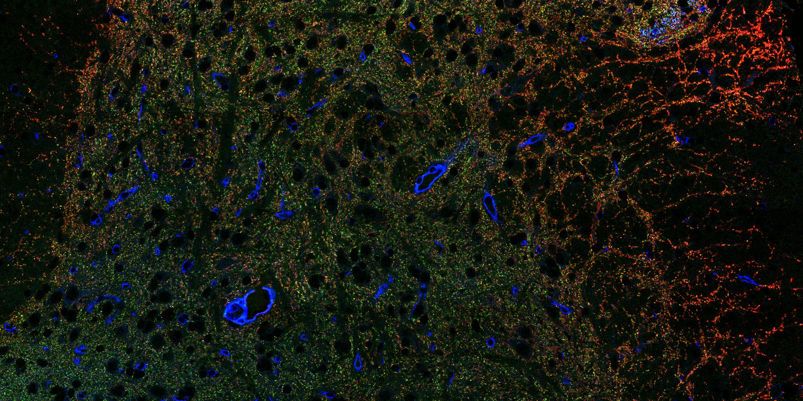
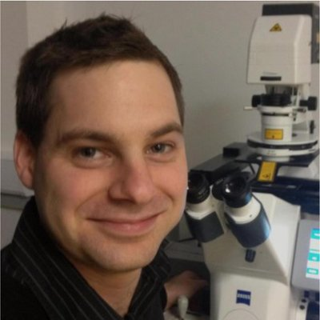

Understanding, modelling, and optimising the histochemical workflow — in the open, for full reproducibility.
The quality and interpretability of histological data is determined at the procedural level — fixation, tissue handling, labelling parameters, processing conditions. HistoTechOpen exists to study and optimise that procedural layer directly. Output like the image below is the standard we're building toward, not the exception.
Histological science divides into three pillars, all dependent on one core workflow.
The discipline: chemical, biochemical, and molecular processes that inform and optimise the workflow.
The engineering: tools and procedure implementations that execute the workflow.
The knowledge: tissue structure derived from histochemistry.
All three depend on the same core Histochemical Workflow.
Standards and metadata frameworks that must exist before procedure work can be documented at all.
Using those standards to develop and mechanistically characterise histochemical workflows.
Provenance → Preserve → Access → Label → Stabilise
High-quality, ground-truth datasets collected using the refined procedures.
Software that extracts understanding from that high-quality data.
Image Formation Models → Image Processing Pipelines → Image Analysis Methods
Built through the RMS Histology FIG, IFSHI, and open science channels — the network through which methodology and data get shared and improved.
MRI–SS2P multimodal mouse brain atlas — Paxinos + Allen CCF annotation (ongoing)
Dendritic/synaptic labelling and reconstruction in cleared tissue — with Teea Wang (ongoing)
DRG full reconstruction (ongoing)
Histochemical Workflow stage optimisation — Provenance / Preserve / Access / Label / Stabilise (ongoing)
Custom component designs — embedding moulds, sectioning matrices, PDMS spacers (in development)
| knowledgemanagr | Plaintext, filesystem-native electronic lab notebook |
| km-claude-skills | Claude Skills for KnowledgeManagr Organisation management |
| procedure-pack-template | KnowledgeManagr insertable-content template for procedure packs |
| procedure-pack-example | Example histology procedure pack, built from the template |
| synaptic-labelling-data | Synaptic labelling dataset + processing video |
| drg-reconstruction-data | DRG full reconstruction dataset + processing video |
| stereomate | StereoMate |
| brainregister | BrainRegister |
What's next for the projects and repos above — next dataset, next procedure pack, next tool migration.

Senior Histology Research Scientist & Head of Histology, Sainsbury Wellcome Centre, UCL · Secretary-General, IFSHI · Founder, RMS Histology FIG.